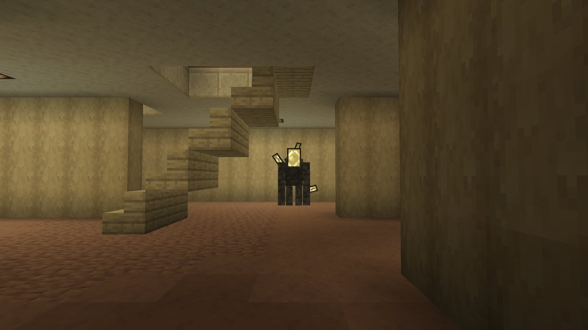
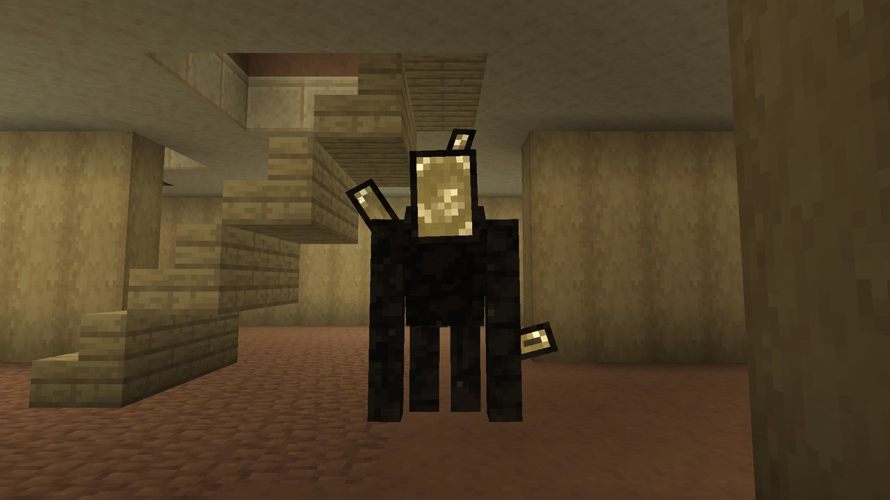
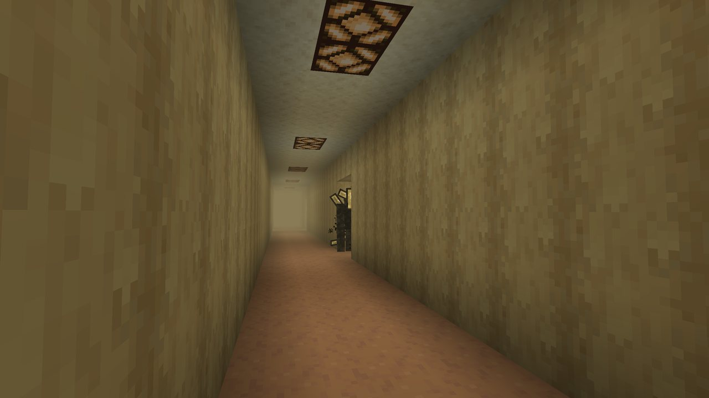
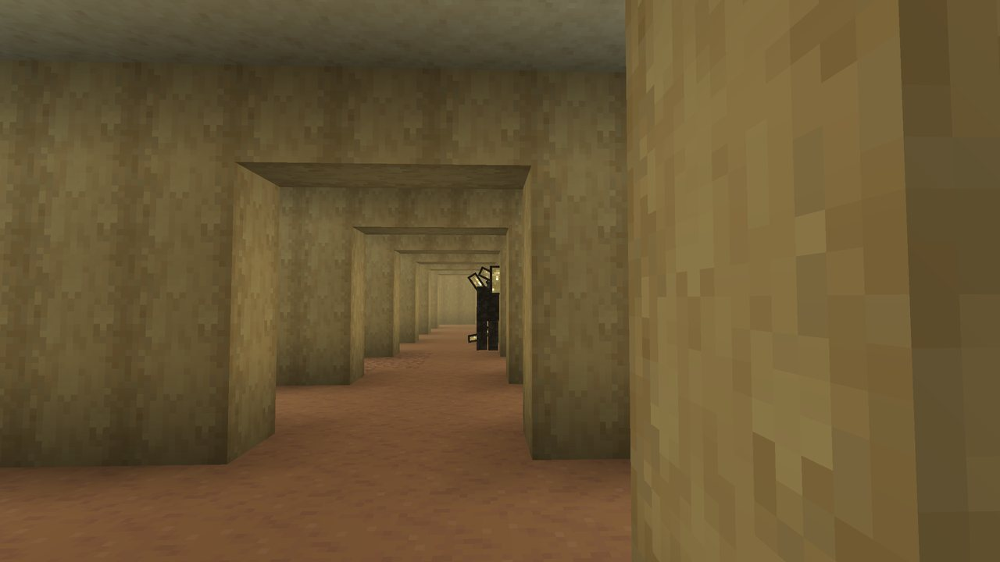
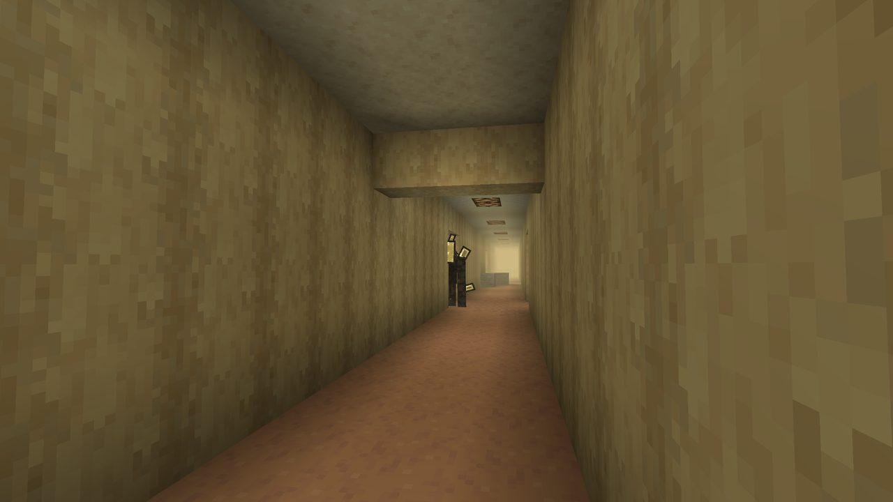
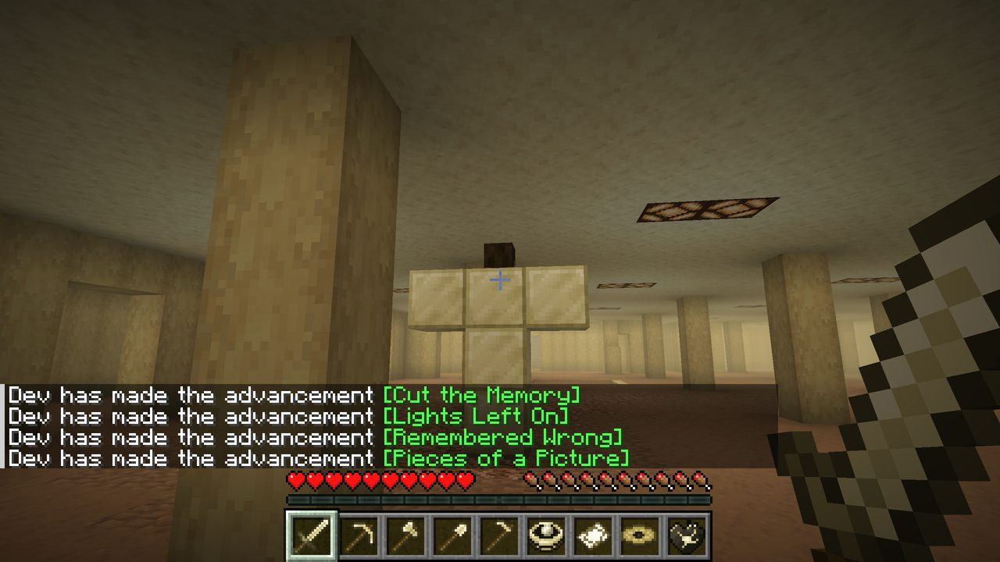
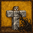
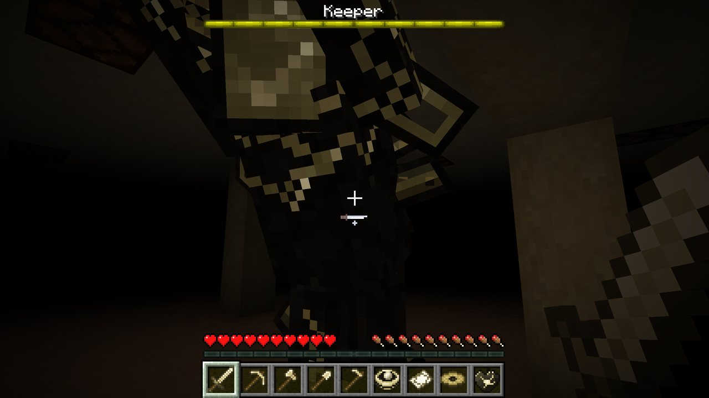
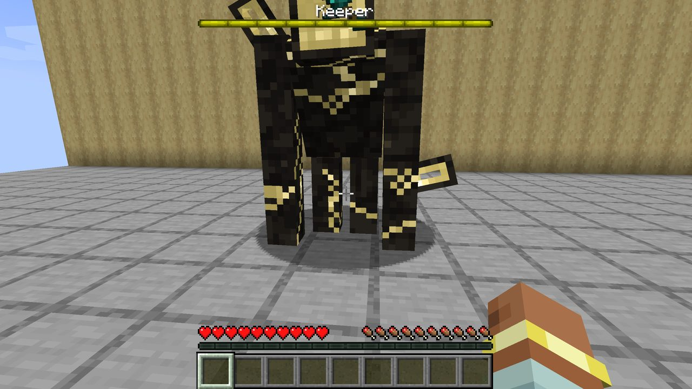
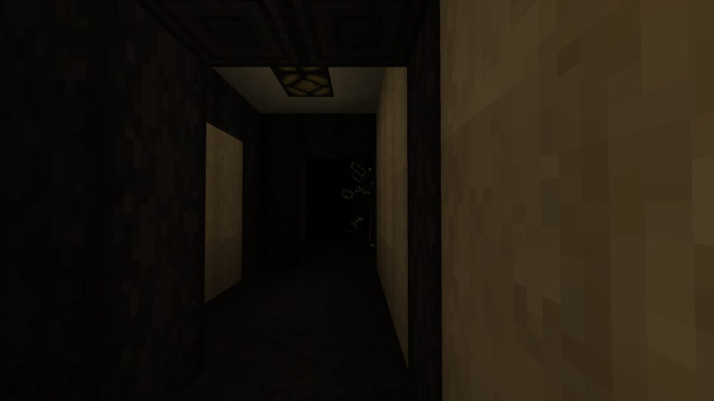

Home » What lives there » The Keeper
The Keeper
There is one hunter in The Remembering. It can't settle on a shape. The longer you stay, the more things it becomes, and the angrier it gets.


The hunter#
There is one Keeper per world. It is the world trying to remember every mob and every thing at once, unable to settle on one shape: the builders' last monster. Its body keeps changing, and the longer you stay inside, the more things it becomes.
- It hunts the player who has spent the most time inside, once that player has been in for 10 minutes on a visit.
- It only comes closer while you are not looking. It stalks from cover: it waits right beside a wall, a door jamb or a pillar where you can't see it, often peeking out with just the side of its face or an arm past the corner, and moves on only while nobody is looking.
- Spot it peeking and it is gone after a second. Catch it out in the open and it is gone almost at once. It slips off to another hiding spot ahead of you, where you are heading.
- How close it waits depends on its anger: 22 to 40 blocks away when calm, 11 to 22 at its angriest. If you get more than 24 blocks farther off than that, it moves up.
- Listen: its sounds tell you roughly how far away it is: distant, near, close.
- When it charges at you, darkness falls over your screen.



Anger#
Its anger comes from your total time inside, across every visit:
| Anger | Total time inside |
|---|---|
| 0 | under 6 minutes |
| 1 | 6 to 15 minutes |
| 2 | 15 to 28 minutes |
| 3 | 28 minutes or more |
Each time it gets angrier, the lights near you are likely to go out in a blackout. Its anger also decides how many Vivids it summons in a fight.
Caught#
After stalking a while it plays its charge sound, waits, then runs at you. If it reaches you, it grabs you: 6 damage, blindness and darkness, and you are dragged away, either back to the door you came in by or two to five floors down. Then it retreats. Being caught gives the advancement Lost Your Place.
Stand by a door
It never drags someone standing by a Gateway. If it charges, get to an open door.
It cannot be hurt
Nothing hurts the Keeper while it hunts. To fight it you have to give it a shape.
The Shape: pinning it#
You cannot beat the Keeper as it is. Build it a body and it has to take that shape. The Shape painting by The Builders, which hangs in the Buried Works, shows how.
- Get a Still Life Head by taking a Still Life apart.
- Inside The Remembering, build a T of five Blocks of Memarium: two stacked in a column, with three across the top (like an iron golem's body).
- Place the Still Life Head on the middle of the top row, last.


Building it gives the advancement Give It a Shape. It does not work during the quiet period after the Keeper has been beaten, and only one Shape can be answered at a time.
His arrival#
He does not appear on the spot. The Shape keeps standing, and he comes to it:
- Notice: a few seconds of nothing but sparks on the Memarium, and his distant sound from where he is.
- Arrive: he appears 8 to 12 blocks away, out of sight, and the lights go out. He walks up to the Shape. Nothing can touch him now: hits just bounce off.
- Inspect: about eleven seconds standing over the statue while he forms, like the Wither: the boss bar fills, yellow cracks open, frames rise round him and he grows. The fog turns black round you.
- Bash: he smashes the Shape. A deep boom: the walls next to him shatter, everyone within 10 blocks is thrown back and takes 4 damage, and the floor ripples away from him. The fight starts where he stands.
Breaking the Shape early
If any of the six blocks is broken before he bashes it, he leaves. The blocks are not refunded, and the builder's time inside counts six minutes more, so he is one step angrier sooner. If the builder leaves The Remembering or logs out first, he leaves too, without the extra anger.
The fight#

- Health
- 300 (150 hearts), armor 8, never knocked back
- Melee
- 12 damage up close
- Slam
- Every 11 to 15 seconds when you are within about 4 blocks: 6 damage and a hard push to everyone within 5 blocks
- Speed
- He runs a little faster than a sprinting player
- He fights wherever you go, up to 64 blocks away. Where he cannot walk to you (a low doorway, a pillar), he shifts beside you within a second.
- He knows when you run: three seconds of sprinting away and he beams you, or steps in front of you.
- At two thirds and one third of his health he summons Vivids: one plus his anger each time.
- The fog stays black about 14 blocks out, and the lights go out every 30 to 60 seconds.
The beam: rewind and steal#
From range (9 to about 22 blocks, or from 5 where he can't walk to you) he charges a beam like the Warden's sonic boom: 1.7 seconds, then a line of doorways runs from his face to you. The aim locks half a second before the shot, so sidestep or duck behind something.
- Rewind (most beams): you glide back along the way you came, the last 5 seconds played backwards, the picture drained of colour and torn. You end up exactly where you were five seconds ago.
- Steal (about one beam in six): the item in your hand is pulled out and drawn along the beam to his face. You can catch it on the way. If it reaches him it glows in his face until you hit him three times, or kill him, and it falls back out to you.
- Under half health he beams twice as often, and about one beam in three steals.

The rearrange#
Thirty seconds into the fight, and then every 45 to 60 seconds, he moves the walls. Every wall of the floor within 50 blocks of him lifts, slides and drops into a new plan of the floor, rippling out from him. It does no damage, but the way you knew is gone. Pits, stairs, the ramp, refuges, structures, door rooms, your own blocks and any cell with somebody in it are left alone.

Eating the walls#
Hurt (below 90% health), every 25 to 45 seconds he pulls up to eight wall blocks within 8 blocks into himself, and each one mends 5 health. Fighting in open floor, away from the walls, gives him less to eat.
If you die or leave#
- Only one Keeper ever exists. He is never saved with a chunk: when everyone leaves, he is gone from the world.
- Come back within 64 blocks of the fight within 10 minutes and he is standing there exactly as you left him, with the health he had.
- Nobody comes back for 10 minutes and the fight is abandoned: he is no longer pinned, and later goes back to stalking with his anger. He was not beaten, so there is no quiet period.
Beating him#
Beaten, he recoils, holds still, sinks to his knees and crumbles into his own face, farthest pieces first, like the Ender Dragon dissolving.
- Everyone in the fight gets a Settled Heart, even someone who never landed a hit. Each heart is kept for its own fighter while they are still around, for up to a minute; one whose fighter left or went far off is anyone's after 3 seconds. Hearts never come out inside or behind a wall.
- Beating him gives the challenge You Can't Kill a Memory.
- A stolen item still in his face comes back out.
- Then The Remembering is quiet: no Keeper for 40 minutes by default (
keeper.quietMinutes). Not for good.
The Settled Heart is the middle of two recipes: the Memento and the Snapshot.
Hiding from him#
- Leggings with Stillness hide you while you stand still or crouch: he only notices you within 20, 14 or 8 blocks (levels I, II, III).
- Refuges and doors do not stop him, but he never drags you away from beside a Gateway.
- Ops can make him leave with
/backrooms quiet, or turn him off in the config withkeeper.enabled = false.